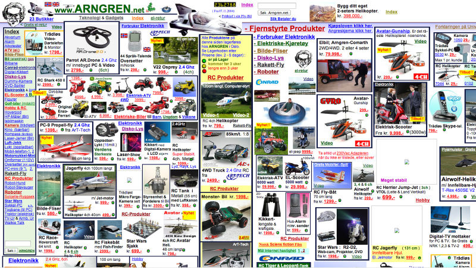
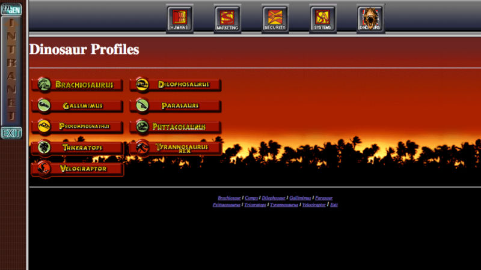
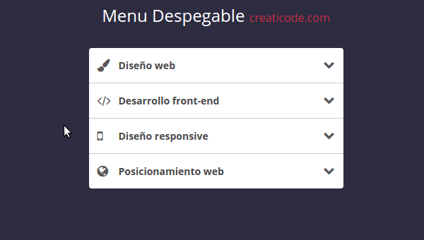
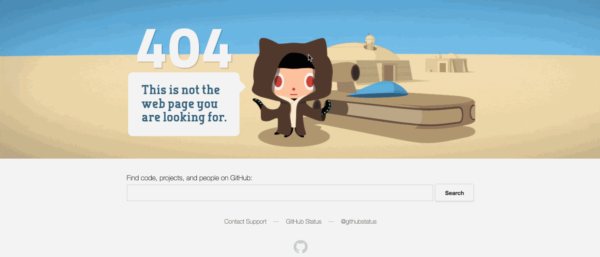
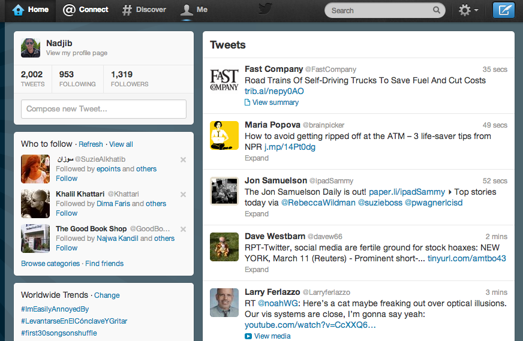
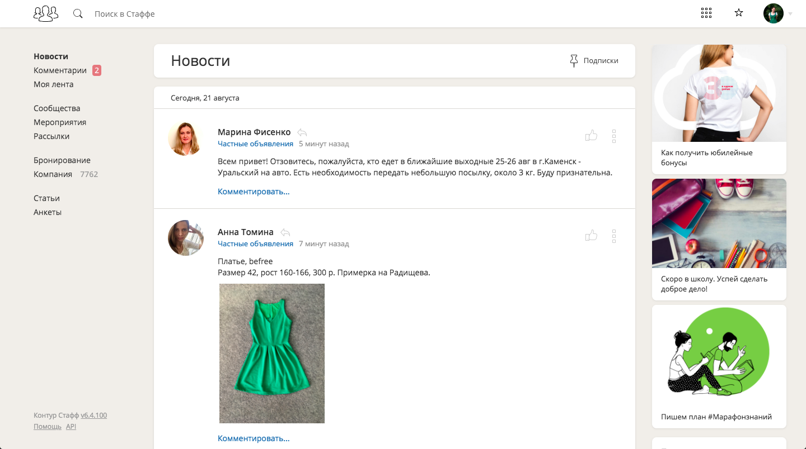
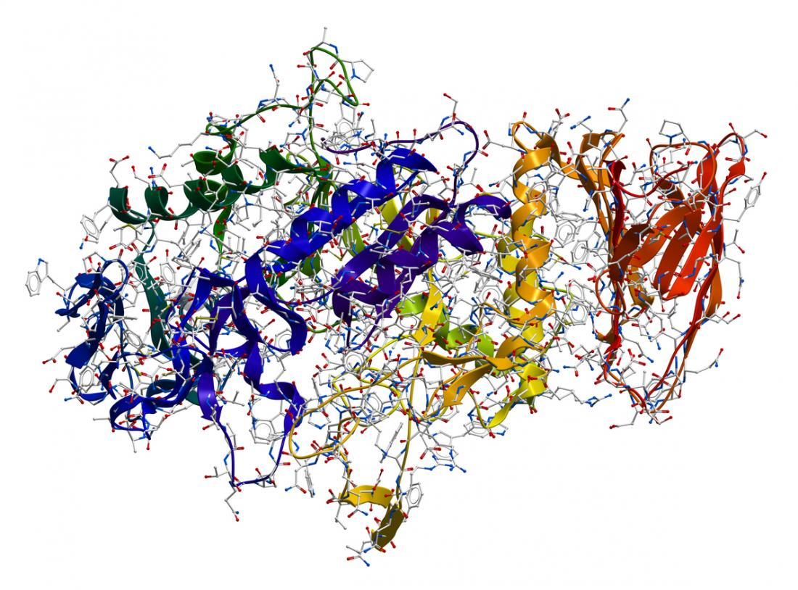
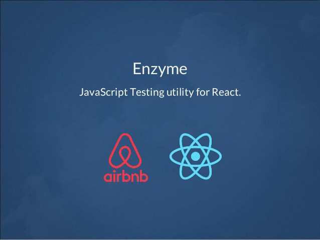

<!doctype html>
<html>
<head>
    <meta charset="utf-8">
    <meta name="viewport" content="width=device-width, initial-scale=1.0, maximum-scale=1.0, user-scalable=no">
    <link rel="stylesheet" href="reveal/css/reveal.css">
    <link rel="stylesheet" href="reveal/css/theme/kontur-light.css" id="theme">
    <!-- Theme used for syntax highlighting of code -->
    <link rel="stylesheet" href="reveal/css/highlight/idea-for-light.css">
    <link rel="stylesheet" href="reveal/css/highlight/darkula-for-dark.css">
    <!--[if lt IE 9]>
    <script src="reveal/js/html5shiv.js"></script>
    <![endif]-->
	<script defer src="reveal/js/head.min.js"></script>
	<script defer src="reveal/js/reveal.js"></script>
	<script defer src="reveal/initialize.js"></script>
	<script defer src="reveal/js/d3.min.js"></script>

    <style>
		.img-center {
            position: absolute;
            left: 50%;
            top: 50%;
            transform: translate(-50%, -20%);
        }

    </style>
	
	<title>React</title>
</head>
<body>

<div class="reveal"><div class="slides">

<section data-markdown><script type="text/template">

# React Workshop

<p style="text-align: center;"><a href="https://github.com/Aminopyridin/react-for-testers">
    https://github.com/Aminopyridin/react-for-testers
</a></p>

</script></section>

<section data-markdown><script type="text/template">

## Сначала самое важное

Скачиваем все необходимые пакеты Node.js:
```
cd tasks
npm install
```

Затем запусти dev-сервер, чтобы видеть результаты решений задач:
```cmd
npm run start
```

Посмотреть можно будет на <a href="http://localhost:8080">http://localhost:8080</a>

Перестроение автоматическое, пока работает dev-сервер

</script></section>

<section data-markdown><script type="text/template">

### Как устроен мастер-класс

- 2 часа, без перерывов
- 4 практические задачи
- закончившие раньше показывают решение и помогают остальным разобраться
- вопросы приветствуются

***

### Темы сегодняшнего дня

- Почему появился Реакт? Куда делся jQuery? — Краткая история фронтенда
- Что такое Реакт?
- Что можно делать на Реакте?
- Как это все потом тестить?

</script></section>

<section data-markdown><script type="text/template">

## Почему появился Реакт? Куда делся jQuery?

***

### Конец 90-х — начало 2000-х.

<div style="min-height: 450px;">
    
    
    
    <video autoplay="autoplay" loop="loop" width="800" height="450" class="img-center fragment" data-fragment-index="3">
        <source src="assets/site4.mp4">
    </video>
</div>

***

### Интернет read-only

- Документы
- Internet Explorer
- Файловая структура: все в HTML-файле
- Структура сайтов:

```
HTML ======================================
CSS  ===
```


***

### Web 2.0. Появление jQuery

<div style="min-height: 450px;">
    
</div>

***

### Web 2.0. Появление jQuery

<div style="min-height: 450px;">
    
</div>

***

### Web 2.0. Появление jQuery

<div style="min-height: 450px;">
    
</div>

***

### Web 2.0. Появление jQuery

<div style="min-height: 450px;">
    
</div>


***

### Web 2.0

- Интернет-магазины, лендинги, блоги...
- «Зоопарк» браузеров
- Файловая структура: отдельно файлы стилей, разметки и js
- Структура сайтов:

```
HTML =====================
CSS  =========
JS   ==
```


***

### Эпоха приложений

<div style="min-height: 450px;">
    
</div>

***

### Эпоха приложений

<div style="min-height: 450px;">
    
</div>

***

### Эпоха приложений

<div style="min-height: 450px;">
    
</div>

***

### Эпоха приложений

- SPA: одностраничные приложения
- Много логики и информации
- Браузеры работают по стандартам
- Структура сайтов:

```
HTML =====
CSS  =======
JS   ===========
```

***

### Проблема: разделения на JS, HTML и CSS недостаточно 🧐

Хранить логику отдельно от всего остального становится сложно:
- ее слишком много
- непонятно как она взаимовсязана
- далеко друг от друга находится визуальное представление и то, как оно работает

***

### Решение: компонентный подход 😍

```js
HTML+CSS+JS   |   HTML+CSS+JS   |   HTML+CSS+JS
```

- Каждый компонент = HTML + JS + CSS
- Можно комбинировать и переиспользовать!
- Изолированы: в отличие от обычного CSS

</script></section>

<!-- ************************************************* -->

<section data-markdown><script type="text/template">

## Тут на сцене появляется Реакт 💃

***

### JSX = HTML + JS 😇

```js
function ButtonWithHandle() {
    function handleClick() {
        ...
    }

    return <input type="button" onClick={handleClick}/>
}
```

***

### DOM медленный 😕

А вот JavaScript — быстрый за счет JIT-компиляции!

***

### VirtualDOM — берет на себя упячку 😎

И обновляет DOM когда на самом деле что-то поменялось

***

### Только View в MV* 🔨

React решает одну проблему и делает это хорошо

</script></section>

<!-- ************************************************* -->

<section data-markdown><script type="text/template">

## 1. JSX — улучшенный HTML

***

### Вставка React на страницу

<pre><code class="lang-html hljs">&lt;div id="app"&gt;&lt;/div&gt;</code></pre>

```js
ReactDom.render(
<div className="fromReact"></div>,
document.getElementById('app')
);
```

- Можно вставить в любое место, даже в легаси
- Можно несколько раз

***

### Отличия верстки на JSX

Верстка на JSX похожа на HTML, но есть отличия

***

### Элементы

React-обертки для встроенного в HTML

**HTML**
<pre><code class="lang-html hljs">&lt;div&gt;</code></pre>

**JSX**
<pre><code class="lang-html hljs">&lt;div&gt;</code></pre>

Элементы именуются с маленькой буквы

***

### Тэги должны быть закрытыми

Либо закрывающий тэг
<pre><code class="lang-html hljs">&lt;div&gt;Hello&lt;/div&gt;</code></pre>

Либо слэш в конце
<pre><code class="lang-html hljs">&lt;br /&gt;</code></pre>

***

### Именование свойств в camelCase

Вместо dash-case

**HTML**
<pre><code class="lang-html hljs">&lt;input type="text" tabindex="0" onclick="alert()"&gt;</code></pre>

**JSX**
<pre><code class="lang-html hljs">&lt;input type="text" tabIndex="0" onClick="alert()" /&gt;</code></pre>

***

### Два способа передачи значения атрибута

Через `""` как в HTML

<pre><code class="lang-html hljs">&lt;input type="text" tabIndex="0" /&gt;</code></pre>

Через `{}` с возможностью вставки произвольного JS

<pre><code class="lang-html hljs">&lt;input type={"text"} tabIndex={a + 5} onClick={alert()} /&gt;</code></pre>

В этом случае в IDE работает подсветка и рефакторинги

***

### Вставка JS-значений в верстку

<pre><code class="lang-html hljs">&lt;div&gt;{Math.round(1000/3)}&lt;/div&gt;</code></pre>

***

### class → className

**HTML**
<pre><code class="lang-html hljs">&lt;div class="red"&gt;&lt;/div&gt;</code></pre>

**JSX**
<pre><code class="lang-html hljs">&lt;div className="red"&gt;&lt;/div&gt;</code></pre>

class — слишком популярное слово

***

### value → defaultValue,<br>checked → defaultChecked

**HTML**
<pre><code class="lang-html hljs">&lt;input type="text" value="Candy"&gt;
&lt;input type="checkbox" checked&gt;
</code></pre>

**JSX**
<pre><code class="lang-html hljs">&lt;input type="text" defaultValue="Candy"/ &gt;
&lt;input type="checkbox" defaultChecked /&gt;
</code></pre>

- Так логичнее
- Атрибуты value и checked в React используются для контроля текущего значения

***

### Задача 1. SimpleHtml


</script></section>

<!-- ************************************************* -->

<section data-markdown><script type="text/template">

## 2. Компоненты

***

### Что такое компоненты

Они похожи на функции, возвращающие узлы VirtualDOM

```html
<MyComponent a="1" b="message" />
```

У них могут быть вложенные узлы
```html
<Parent>
    <Child />
    <Child />
</Parent>
```

У них может быть внутреннее состояние
```html
<TextInput defaultValue="Let's go" />
```

***

### Классы-компоненты

```js
class MyComponent extends React.Component {
    render() {
        // Деструктурирующее присваивание
        const { a, b } = this.props;
        return (
            <div>{a} {b}</div>
        );
    }
}
```

***

### PropTypes

```js
MyComponent.propTypes = {
    a: PropTypes.number.isRequired,
    b: PropTypes.string,
    onFire: PropTypes.func
}
```

***

### PropTypes в задаче

```js
Table.propTypes = {
    list: PropTypes.arrayOf(PropTypes.shape({
        name: PropTypes.string,
        surname: PropTypes.string,
        date: PropTypes.string,
    }))
}
```

***

### Задача 2. UserTable


</script></section>

<!-- ************************************************* -->

<section data-markdown><script type="text/template">

## 3. Данные в компонентах

***

### Компоненты с состоянием

```js
class Counter extends React.Component {
    constructor(props) {
        super(props);
        this.state = { value: props.defaultValue, step: props.step };
    }

    render() {
        return <div onClick={this.handleClick}>{this.state.value}</div>;
    }

    handleClick = () => {
        this.setState({
            value: this.state.value + this.state.step
        });
    }
}
```

***

### Нюансы

```js
// Стрелочные функции в JS берут this там, где создаются,
// поэтому их можно безопасно передавать в onClick
handleClick = () => {
    // В state есть value и step, но передаем мы одно — только оно и обновится
    this.setState({
        value: this.state.value * this.state.step
    });
    // Здесь this.state.value еще имеет старое значение.
}
```
<br>
Нельзя просто взять и написать `this.state.value = newValue`
React это не отследит и не отрисует изменения

***

### Задача 3. Input

</script></section>

<!-- ************************************************* -->

<section data-markdown><script type="text/template">

## 4. Тестирование

***

### Как тестировать Реакт?

- юнит тесты
- <span style="color: #808080">снапшотные тесты</span>
- <span style="color: #808080">скриншотные тесты</span>

***

### Юнит-тесты. Enzyme




***


<div style="text-align: center">
    <a href="https://airbnb.io/enzyme/" target="_blank">https://airbnb.io/enzyme/</a>
</div>

***

### Что делает enzyme

- умеет рендерить компоненты
    - поверхностно (shallow) — без детей и внуков
    - полностью (render) — со всеми потомками
    - полную html-разметку (static) — для снапшот-тестирования
- умеет симулировать клики и другие пользовательские действия

***

### Пример теста

```js
describe('<Page>', () => {
    test('render Table', () => {
        const wrapper = shallow(<Page />);
        expect(wrapper.find(Table).length).toBe(1);
    });
});
```

***

### Пример теста с обработчиком кликов

```js
test('click with right argument', () => {
    let mockOnClick = jest.fn();

    const wrapper = shallow(<Row name='I'
                                 surname='b'
                                 date='2015-01-02'
                                 onChange={mockOnClick} />);
    wrapper.find('button').simulate('click');
    expect(mockOnClick).toHaveBeenCalledWith('I', 'b', '2015-01-02');
});
```

***

### Задача 4. Tests

</script></section>

<!-- ************************************************* -->

<section data-markdown><script type="text/template">

### Что мы сегодня обсудили

- Что такое Реакт
- Как "верстать" на Реакте
- Как работает компонентный подход
- Как это все тестируется

***

### Что осталось за бортом

- как это все обменивается данными с сервером
- все многообразие компонентов
- методы жизненного цикла
- доступ к элементам на странице
- производительность

***

### Для тех, кто хочет больше

Блок Реакта на креш-курсе:
- раз в три недели начало (ближайший 17 сентября)
- два дня
- от совсем основ до advanced уровня
- использование контуровских контролов
- куча практики

Запись [на вики](https://wiki.skbkontur.ru/pages/viewpage.action?pageId=136448221)

</script></section>


			
</div></div>
</body>
</html>
